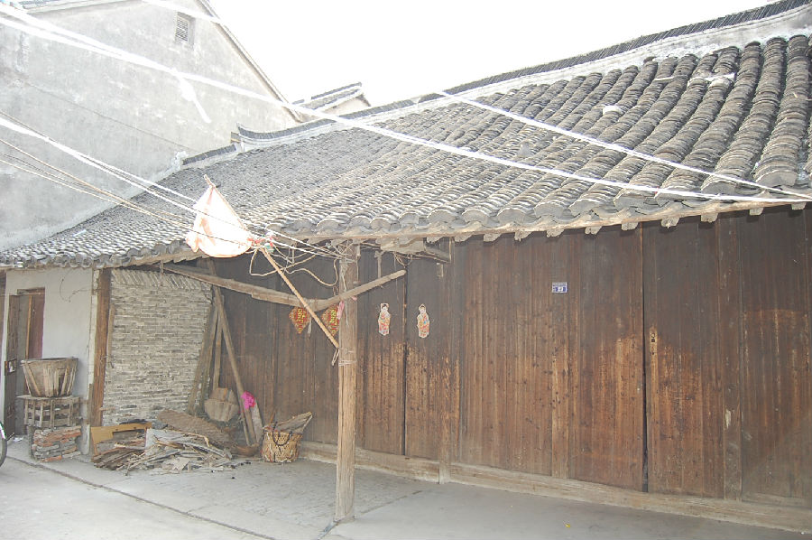
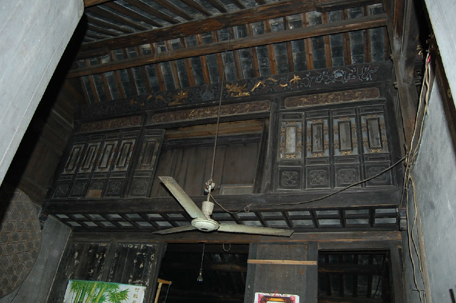

嘉兴市文物保护网 · 市级文物保护点 · 2020-11-02 · 原文


陈家村商家祠堂位于嘉兴市秀洲区王江泾镇双桥村陈家村南23号，据住户介绍为晚清建造，祠堂坐北朝南，三开间，砖木结构，穿斗式五架梁。东间、中间正梁下用木构件做成供奉祖宗牌位的神龛，当地人称之为“家堂”。神龛朝南，长4米，高1.02米，宽0.62米，上额绘祥云双龙抱珠纹。正面各以14扇小窗门一字排列，底座以木龙骨隔断成二排方框，上面铺上方青砖，部分青砖雕花。东间神龛上部置花板挂落莲花垂柱，做工精致。龛内，设有木制牌位，牌位上字已模糊。在嘉兴传统社会，民居中的祭祖神龛曾较为普遍，随着村民生活方式的改变，现已十分少见，祠堂神龛的发现为研究本地祭祀等民俗活动提供了实物例证，具有较高的历史价值。2009年公布为嘉兴市文物保护点。